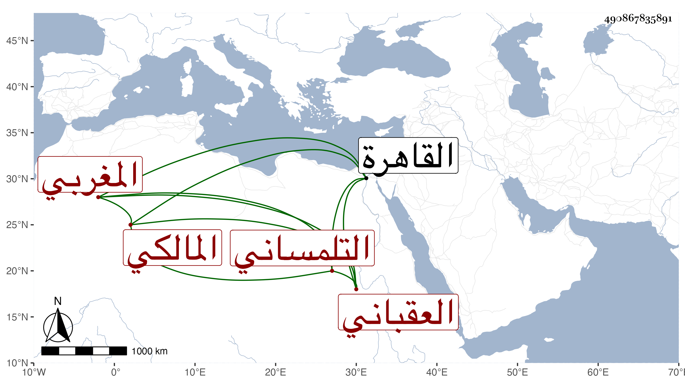

0902Sakhawi.DawLamic.ITO20230111-ara1.EIS1600.490867835891
Biography ID: 490867835891
618
قاسم بن سعيد بن محمد العقباني نسبة لبني عقبة التلمساني المغربي المالكي ويدعى أبا القاسم . ولد في سنة ثمان وستين وسبعمائة ، وقدم القاهرة فكتب لابن شيخنا وغيره بالإجازة في سنة ثلاثين وثمانمائة ، وممن أخذ عنه في الفقه وأصوله أبو الجود البنبي وقال صاحب الترجمة أنه قرأ على والده وأنه كتب قطعة على ابن الحاجب الفرعي ، وله أجوبة في مسائل تتعلق بالصوفية واجتماعهم على الذكر وأن مولد والده سنة عشر أو سبع عشرة وسبعمائة وله مصنف في أصول الدين وتفسير لسورتي الأنعام والفتح وشرح للبرهانية للسلانكي في أصول الدين ولابن الحاجب الأصلي وللحوفي في الفرائض وللجمل في المنطق للخونجي وللبردة .
